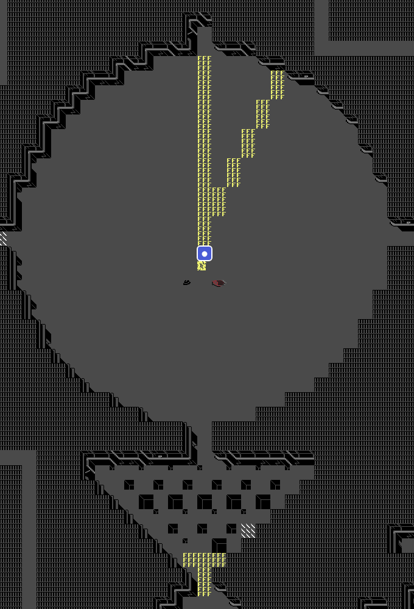

<meta charset="utf-8">
<meta name="viewport" content="width=device-width, initial-scale=1">
<title>A Nightmare on Elm Street: discoveries</title>
<link rel="preconnect" href="https://fonts.googleapis.com">
<link rel="stylesheet" href="https://fonts.googleapis.com/css2?family=Lato:wght@400;700;900&family=IBM+Plex+Mono:wght@400;500&display=swap">
<style>
:root{
  --bg:#23262d; --paper:#e9e7e1; --surface:#ffffff; --surface-2:#f1efea; --line:#d5d3cc; --line-soft:#e0ded8;
  --ink:#2f3136; --ink-soft:#55585f; --ink-mute:#80838a;
  --link:#1f5fa8; --link-hover:#154480; --accent:#1f5fa8;
  --amber:#c25a00; --cyan:#1f5fa8; --coral:#d04a3a; --green:#2a8a4a; --violet:#4a5bd6; --hl:#fff0c2;
  --chip:#2f3136; --chip-ink:#ffffff;
  --c64blue:#40318d; --c64grey:#686868;
  --fd:'Lato',system-ui,sans-serif; --fb:'Lato',system-ui,sans-serif; --fm:'IBM Plex Mono',ui-monospace,Menlo,monospace;
  --col:1080px; --gx:68px; --fs:17px; --lh:1.6; --hw:900; --h1:46px; --h2:26px; --sy:48px; --pp:26px; --r:10px;
  --plate-shadow:0 1px 2px rgba(0,0,0,.05),0 4px 14px rgba(0,0,0,.05);
}
*{box-sizing:border-box}
html{background:var(--bg);min-height:100%}
body{background:var(--paper);color:var(--ink);font-family:var(--fb);font-size:var(--fs);line-height:var(--lh);max-width:var(--col);margin:0 auto;min-height:100vh;padding:0 0 4rem}
h1,h2,h3{font-weight:var(--hw);letter-spacing:-.01em;text-wrap:balance;color:var(--ink);margin:0}
.wrap{padding:0 var(--gx)}
.hero{padding:48px var(--gx) 8px;text-align:left}
.eyebrow{font-family:var(--fm);font-size:12px;letter-spacing:.08em;text-transform:uppercase;color:var(--ink-mute);margin:0 0 10px}
.hero h1{font-size:var(--h1);line-height:1.15;letter-spacing:-.02em;margin:0 0 14px}
.hero .sub{margin:0 0 .6em;color:var(--ink-soft)}
section{padding:var(--sy) 0 24px}
section:last-of-type{border-bottom:none}
.fig{font-family:var(--fm);font-size:12px;letter-spacing:.08em;text-transform:uppercase;color:var(--ink-mute);margin:0 0 10px}
h2.t{font-size:var(--h2);margin-bottom:12px}
.lede{color:var(--ink-soft);margin:0 0 30px}
.plate{background:var(--surface);border:1px solid var(--line);border-radius:var(--r);padding:var(--pp);box-shadow:var(--plate-shadow)}
.cap{font-size:14px;color:var(--ink-mute);margin-top:14px;line-height:1.55}
.cap b{color:var(--ink);font-weight:700}
code{font-family:var(--fm);font-size:.82em;background:var(--chip);color:var(--chip-ink);border-radius:4px;padding:2px 6px;overflow-wrap:break-word;-webkit-box-decoration-break:clone;box-decoration-break:clone}
.plate{margin:0 0 22px}
.ft-table{border-collapse:collapse;font-size:14px;width:100%}
.ft-table td,.ft-table th{border-bottom:1px solid var(--line-soft);padding:5px 8px;text-align:left;vertical-align:top}
.ft-two{display:grid;grid-template-columns:1fr 1fr;gap:16px;align-items:start}
.ft-two .plate{margin:0;padding:12px}
.ft-px{width:100%;height:auto;image-rendering:pixelated;display:block}
.ft-tabs{display:flex;flex-wrap:wrap;gap:6px;margin:0 0 12px}
.ft-scroll{overflow:auto;max-height:80vh;border-radius:6px;background:#222}
.ft-scroll canvas{image-rendering:pixelated;display:block}
.ft-key{display:flex;flex-wrap:wrap;gap:6px 16px;font-size:14px;margin:10px 0 0;color:var(--ink-soft)}
.ft-key span{display:inline-flex;align-items:center;gap:6px}
.ft-key b{display:inline-block;min-width:22px;text-align:center;font:700 12px/18px var(--fm);border-radius:4px;color:#fff;padding:0 4px}
sup.fn{font-size:.7em;line-height:0}
sup.fn a{text-decoration:none}
sup.fn + sup.fn::before{content:","}
.overview-shot{margin:22px 0}
.overview-shot img{width:100%;max-width:768px;height:auto;aspect-ratio:384/272;image-rendering:pixelated;display:block}
.overview-shot figcaption{font-size:14px;color:var(--ink-mute);margin-top:8px;max-width:768px}
@media (max-width:760px){:root{--gx:16px;--h1:36px;--pp:14px}.ft-two{grid-template-columns:1fr}}
kbd{font:500 12px/1 var(--fm);border:1px solid var(--line);border-bottom-width:2px;border-radius:4px;padding:2px 5px;background:var(--surface-2);color:var(--ink);white-space:nowrap}
.nm-compass{max-width:520px;table-layout:fixed}
.nm-compass td{text-align:center;padding:10px 6px;border:1px solid var(--line-soft)}
</style>
<!-- tabs -->
<header class="hero">
  <p class="eyebrow">Commodore 64 · 1989 · Monarch Software</p>
  <h1>Discoveries</h1>
  <p class="sub">A cry for help drawn in a level's walls, a key the game never mentions, texts nothing prints, and a copy-protection question that hangs the game.</p>
</header>
<main class="wrap" data-part="">

<section id="help">
  <p class="fig">01 · Level 4</p>
  <h2 class="t">HELP ME, in the walls of level 4</h2>
  <figure class="overview-shot"><figcaption>The south-east corner of level 4, drawn from the level's map file.</figcaption></figure>
  <p>In the south-east corner of level 4, the floor is laid out in the words HELP ME. No corridor leads into it, so you never walk past it. The MAP item draws the whole level two dots to a cell (<a href="source-house.html#3034"><code>use_map</code></a>), and there the words can be read. The whole level is on the <a href="levels.html#maps">Maps</a> tab.</p>
</section>

<section id="clock">
  <p class="fig">02 · Level 10</p>
  <h2 class="t">Level 10 is a clock</h2>
  <figure class="overview-shot"><figcaption>The middle of level 10. You arrive at the centre of the clock face.</figcaption></figure>
  <p>The last level is built round a clock face, with its hands near midnight, and an hourglass below it. You arrive at the centre of the face. It fits the level's rule: a clock runs only here, announcing "IT'S NOW n O'CLOCK", and at 12 the <a href="gameplay.html#final">final fight</a> starts whether you are ready or not (<a href="source-house.html#1495"><code>game_clock</code></a>).</p>
</section>

<section id="f3">
  <p class="fig">03 · A hidden key</p>
  <h2 class="t">F3 fills your health in Springwood</h2>
  <p>On the street, pressing <kbd>F3</kbd> fills your health to the top and redraws the meter. <a href="source-street.html#267A"><code>street_player_turn</code></a> treats it as action 31, and the house's own key table at <a href="source-house.html#396A"><code>action_keys</code></a> has no such key, so it works only before you find Freddy's house. Nothing in the game mentions it.</p>
</section>

<section id="joey">
  <p class="fig">04 · Joey</p>
  <h2 class="t">Six portraits, five choices</h2>
  <p>The character select shows six Dream Warriors, but <a href="source-street.html#2286"><code>select_loop</code></a> ignores fire on Joey's portrait, the fifth. His ability in the list at <a href="source-street.html#23A9"><code>$23A9</code></a> reads "NONE (VICTIM)". Everything after the select counts five characters, and Taryn, in the sixth place, is character 4. Joey does not appear in the house either: the four friends to rescue are the four warriors you did not choose. MobyGames' description, written for the PC version, says you set out to rescue Joey, whom Freddy has already taken.<sup class="fn"><a href="about.html#src-1">1</a></sup> On the Commodore 64 nothing in the code goes looking for him.</p>
</section>

<section id="shield">
  <p class="fig">05 · The MAGIC SHIELD</p>
  <h2 class="t">A shield that does nothing</h2>
  <p>The MAGIC SHIELD is the third item name in the game's message list at <a href="source-house.html#39DF"><code>messages</code></a>, item <code>$35</code>, and one lies on level 8, at cell 62, 43. It can be picked up and carried like anything else. It cannot be used: it is not a weapon in <a href="source-house.html#7A40"><code>cell_flags</code></a>, the item handlers at <a href="source-house.html#2F87"><code>item_handlers</code></a> start after it, and using it gives "WHAT ARE YOU GOING TO DO WITH THAT?" No instruction in the house tests for it, and none of the ten level scripts does either.</p>
</section>

<section id="bat">
  <p class="fig">06 · A hint that changes nothing</p>
  <h2 class="t">The bat works no better on skeletons</h2>
  <p>Level 1's script tells you "THE BAT WORKS BEST ON SKELETONS", and the skeleton's weakness at <a href="source-house.html#744C"><code>kind_weakness</code></a> is indeed the BASEBALL BAT. But a weakness only swaps the weapon's usual damage for the amount at <a href="source-house.html#7452"><code>kind_weak_damage</code></a> (<a href="source-house.html#4523"><code>damage_monster</code></a>). The bat's usual damage at <a href="source-house.html#45F0"><code>weapon_damage</code></a> is 19, and its damage to a skeleton is 19 too. The other three weaknesses pay: the PICK does 28 to a roach instead of 6, the DAGGER 50 to a slime instead of 4, and the AXE 19 to a wheelchair instead of 12.</p>
</section>

<section id="vending">
  <p class="fig">07 · The vending machine</p>
  <h2 class="t">A thief and a jackpot that never happen</h2>
  <p>The vending machine's texts at <a href="source-house.html#5506"><code>vend_texts</code></a> hold more than the machine ever says. Next to "ITEM PURCHASED" are "IT STOLE YOUR MONEY", "LOOKS LIKE YOU GOT LUCKY !", and the pieces "A " and " APPEARS INSTEAD". No instruction prints any of them. <a href="source-house.html#54A2"><code>vend_buy</code></a> only ever sells you what you chose, at its price.</p>
</section>

<section id="grabbed">
  <p class="fig">08 · The street</p>
  <h2 class="t">"YOU'VE BEEN GRABBED. CONTINUING."</h2>
  <p>The street part holds a routine at <a href="source-street.html#2EBF"><code>street_grabbed_unused</code></a> that prints "YOU'VE BEEN GRABBED. CONTINUING." and sets the message timer. Nothing calls it. Its neighbour at <code>$2EBE</code> is a lone <code>RTS</code>, and that is what the street's idle timer calls when it runs out (<a href="source-street.html#267A"><code>street_player_turn</code></a>).</p>
</section>

<section id="scratch">
  <p class="fig">09 · A slip in the loader</p>
  <h2 class="t">LDX $0014, where LDX #$14 was meant</h2>
  <p>Before the game saves, it deletes the old file with a scratch command. <a href="source-street.html#2066"><code>scratch_copy</code></a> copies the command's template into the loader, and the count of bytes to copy comes from <code>LDX $0014</code>, the byte at address <code>$0014</code>, when <code>LDX #$14</code>, the number 20, was surely meant. With 0 at <code>$0014</code> only the <code>S</code> is copied. The slip does no harm, because the loader's own copy already holds the rest of the command, so the saves still work.</p>
</section>

<section id="poses">
  <p class="fig">10 · Shared pictures</p>
  <h2 class="t">Will and Nancy share their special-power pictures</h2>
  <p>Each character has a block of their own pictures in the file <code>PLYR</code>, copied into place as the street hands over to the house, and the table at <a href="source-street.html#1F80"><code>char_shape_sources</code></a> says where each one lies. Will and Nancy point at the same block, <code>$9800</code>. Will's lightning and Nancy's freeze are drawn with the same frames, as the <a href="graphics.html#characters">Graphics</a> tab shows.</p>
</section>

<section id="song">
  <p class="fig">11 · The ending tune</p>
  <h2 class="t">The ending plays the title tune</h2>
  <p>Beating Freddy loads a file called <code>SONG</code> from side 2 and plays it through the sound-effect player while the congratulations are printed (<a href="source-house.html#4604"><code>game_won</code></a>). <code>SONG</code> is the title tune, the same notes as the copy in the street part at <a href="source-street.html#13F9"><code>$13F9</code></a>, built to play from <code>$B000</code>. The game has one tune, on the <a href="music.html#tune">Music</a> tab.</p>
</section>

<section id="question">
  <p class="fig">12 · The manual question</p>
  <h2 class="t">Two wrong answers, and the game stops for good</h2>
  <p>On the way into level 4, <a href="source-house.html#5AF4"><code>manual_question</code></a> asks one of ten questions about the manual. One wrong answer prints "WRONG" and asks again. A second sends the game into a loop at <a href="source-house.html#5B65"><code>$5B65</code></a> that jumps to itself, with nothing to say the game has stopped. The only way out is to switch off. The game was saved on the ladder down, just before the question, so loading it puts you back on the ladder to try again. The ten questions and their answers are on the <a href="gameplay.html#question">Gameplay</a> tab, and each one matches the instruction guide.</p>
</section>
</main>
<footer style="margin:16px 0 0;padding:22px var(--gx) 0;border-top:1px solid #e0ded8;font-family:'IBM Plex Mono',ui-monospace,Menlo,monospace;font-size:12px;color:#80838a"><a href="https://github.com/gamesexplained/gamesexplained" style="color:#1f5fa8;text-decoration:none">GitHub</a> · <a href="https://discord.gg/3V9GWyRDWV" style="color:#1f5fa8;text-decoration:none">Discord</a><br>© Games Explained contributors. Write-ups, facts and symbol maps are available under <a href="https://creativecommons.org/licenses/by-sa/4.0/" style="color:#1f5fa8;text-decoration:none">CC BY-SA 4.0</a>; code under <a href="https://opensource.org/licenses/MIT" style="color:#1f5fa8;text-decoration:none">MIT</a></footer>
